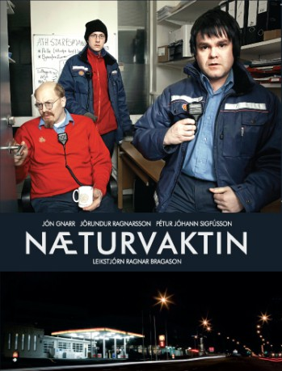
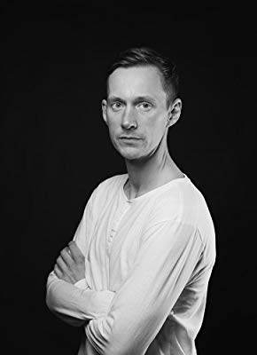
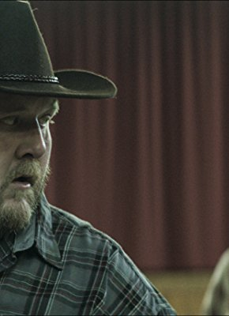

Alternativ: Night Shift, The (Originaltitel)
 
 IMDB-Wertung: 8.7 / 10
IMDB-Wertung: 8.7 / 10  Metascore: 0
Metascore: 0 
“Die Nachtschicht” dreht sich um das Leben der drei Angestellten einer ruhigen Tankstelle in Reykjavík. Der Schichtleiter Georg Bjarnfreðarson ist ein exzentrischer und überqualifizierter Kommunist, der eine beeindruckende Anzahl an Hochschulabschlüssen besitzt und keine Gelegenheit auslässt, genau das zu betonen. Er lebt und handelt nach einem strengen, selbst erdachten Regelwerk, das hauptsächlich von einer seltsamen Ernährung und antikapitalistischer Propaganda handelt. Die Tatsache, dass ein Mann mit seinen Fähigkeiten bei einer Tankstelle arbeitet, hat mächtig viel Bitterkeit in ihm entstehen lassen. Sein Mitarbeiter Ólafur Ragnar träumt davon, ein erfolgreicher Bandmanager zu sein, jagt allem nach, was glitzert, und mimt den Coolen. Dabei ist er ein hoffnungsloser Träumer, der es aber immer nur gut mit allen meint. Als Dritter im Bunde stößt Daníel dazu, der gerade frustriert und deprimiert sein Medizinstudium hingeschmissen hat und keine Ahnung hat, was er mit seinem Leben anfangen will. “Die Nachtschicht” ist Teil einer Serien-Trilogie, die mit der “Tagschicht” fortgesetzt wird.
Jahr: 2007
Dauer: 26 Minuten
FSK:
Land: Island Studio: BBC FourTonspuren:
Untertitel: Deutsch,
Auflösung: SD (720x564) Größe: 261 MB
Genre: Drama, Komödie, TV-Serie
Regisseur: Ragnar Bragason
Drehbuch:
Soundtrack:
Darsteller:
-  Jörundur Ragnarsson als Daníel, 12 episodes, 2007
- Jón Gnarr als Georg, 12 episodes, 2007
-  Gunnar Jónsson als Hallgrímur, 4 episodes, 2007
- Sara Dögg Ásgeirsdóttir als Erna, 3 episodes, 2007
- Stefán Hallur Stefánsson als Frikki, 2 episodes, 2007
- Sigurjón Kjartansson als Olgeir, 1 episode, 2007
- Ásgeir Kolbeinsson als Sérstakir gestir, 1 episode, 2007
- Ragnar Bragason als Rödd á skiptibordi lögreglu, 1 episode, 2007
- Benedikt Erlingsson als Maður japönsku konunnar, 1 episode, 2007
- Matthew McConaughey » #220 on STARmeter CELEBS Born Today Celebrity News Most Popular Celebs PHOTOS Latest Stills Latest Posters Photos We Love EVENTS Awards Central Festival Central Oscars Golden Globes Sundance Cannes Comic-Con Emmy Awards Venice Film Festival Toronto Film Festival Tribeca SXSW All Events News & Community LATEST HEADLINES Telluride 2018: Why The Fall Movie Season Is Looking Better Than Usual — Analysis 14 hours ago | Indiewire New ‘Police Academy’ Movie On The Cards? 7 hours ago | The Hollywood News Dave Bautista Doesn’t Know Whether He Wants to Work for Disney After James Gunn Firing (Video) 20 hours ago | The Wrap NEWS Top News Movie News TV News Celebrity News Indie News COMMUNITY Contributor Zone Polls Watchlist YOUR WATCHLIST if (!('imdb' in window)) window.imdb = ; window.imdb.watchlistTeaserData = href : /list/watchlist, src : https://m.media-amazon.com/images/G/01/imdb/images/navbar/watchlist_slot1_logged_out-1670046337._CB470041656_.jpg , href : /search/title?count=100&title_type=feature,tv_series, src : https://m.media-amazon.com/images/G/01/imdb/images/navbar/watchlist_slot2_popular-4090757197._CB470041610_.jpg , href : /chart/top, src : https://m.media-amazon.com/images/G/01/imdb/images/navbar/watchlist_slot3_top250-575799966._CB470041651_.jpg ; The essential resource for entertainment professionalsFind industry contacts & talent representationAccess in-development titles not available on IMDbGet the latest news from leading industry tradesClaim your page and control your brand across IMDb & AmazonTryIMDbProFreeTry IMDbPro Free | Help Sign in with Facebook Other Sign in options doWithAds(function()if ('injected_slot' != 'injected_slot') ad_utils.register_ad('injected_navstrip');); doWithAds(function()if ('injected_slot' == 'cornerstone_slot') ad_utils.inject_serverside_ad('injected_navstrip', '');else if ('injected_slot' == 'injected_slot') ad_utils.inject_ad.register('injected_navstrip'); else ad_utils.gpt.render_ad('injected_navstrip');, ad_utils not defined, unable to render client-side GPT ad or injected ad.); if (typeof uet == 'function') uet(ne); doWithAds(function()if ('injected_slot' != 'injected_slot') ad_utils.register_ad('injected_billboard');); doWithAds(function()if ('injected_slot' == 'cornerstone_slot') ad_utils.inject_serverside_ad('injected_billboard', '');else if ('injected_slot' == 'injected_slot') ad_utils.inject_ad.register('injected_billboard'); else ad_utils.gpt.render_ad('injected_billboard');, ad_utils not defined, unable to render client-side GPT ad or injected ad.); Edit The Night Shift (2007– ) if ('csm' in window) csm.measure('csm_body_delivery_started'); Full Cast & Crew Series Directed by Ragnar Bragason als
- Pétur Jóhann Sigfússon als Ólafur Ragnar, 12 episodes, 2007
- Sara Margrét Nordahl als Ylfa Dís, 10 episodes, 2007
- Arnar Freyr Karlsson als Flemming Geir, 8 episodes, 2007
- Halldór Gylfason als Kiddi Casio, 4 episodes, 2007
- Tinna Gunnlaugsdóttir als Jeppakonan, 4 episodes, 2007
- Anna Kristín Arngrímsdóttir als María, 3 episodes, 2007
- Charlotte Bøving als Monika, 2 episodes, 2007
- Arnar Jónsson als Sævar, 2 episodes, 2007
- María Guðmundsdóttir als Kona frá barnavernd, 2 episodes, 2007
- Dóra Jóhannsdóttir als Dögg, 2 episodes, 2007
- Sigurjón Bergsson als Sólin, 2 episodes, 2007
- Ásgeir V. Árnason als Sólin, 2 episodes, 2007
- Viktor Sigurjónsson als Sólin, 2 episodes, 2007
- Olgeir Pétursson als Pétur, 1 episode, 2007
- Garðar Finnsson als Starfsmaður á dagvakt, 1 episode, 2007
- Jóhann Ævar Grímsson als Sendill frá Ævarsprent, 1 episode, 2007
- Atli Freyr Árnason als Gauti, 1 episode, 2007
- Margrét Helga Jóhannsdóttir als Bjarnfreður, 1 episode, 2007
- Herdís Þorvaldsdóttir als Frú, 1 episode, 2007
- Einar Aðalsteinsson als Tvítugur maður, 1 episode, 2007
- Víkingur Kristjánsson als Yngri lögga, 1 episode, 2007
- Xavier Rodriguez als Viðskiptavinur, 1 episode, 2007
- Arnar Grant als Sérstakir gestir, 1 episode, 2007
- Harald G. Haraldsson als Eldri lögga, 1 episode, 2007
- Jóna Guðrún Jónsdóttir als Bogga, 1 episode, 2007
- Theodór Júlíusson als Sólmundur, 1 episode, 2007
- Hákon Pálsson als Ungur viðskiptavinur, 1 episode, 2007
- Árni Tryggvason als Gudjón gamli, 1 episode, 2007
- Þorstein J. Vilhjálmsson als Sérstakir gestir, 1 episode, 2007
- Haraldur Ágústsson als Tryggvi, 1 episode, 2007
- George Obinwanne Anayamele als Benjamin, 1 episode, 2007
- Gísli Marteinn Baldursson als Sérstakir gestir, 1 episode, 2007
- Einar Jarl Björgvinsson als Barnabarn Sólmundar, 1 episode, 2007
- Erlendur Eiríksson als Lögga í talstöð, 1 episode, 2007
- Kjartan Guðjónsson als Jeppamaður, 1 episode, 2007
- Vignir Rafn Valþórsson als Halli, 1 episode, 2007
- Mizuho Watanabe als Japönsk kona, 1 episode, 2007
- Birgitta Haukdal als Sérstakir gestir, 1 episode, 2007
- Ólafur Steinn Ingunnarson als Sigurður, 1 episode, 2007
- Eiríkur Rafn Rafnsson als Lögregluþjónn, 1 episode, 2007
Datei: X:\HD-Serien\Island Schicht\1 Die Nachtschicht\Die Nachtschicht - S01E01.mkv seit 04.09.2018
Festplatte: HD Serien(I-ST)
 Es gibt insgesamt 182 Filme in der Gruppe 'HD-Serien'
Es gibt insgesamt 182 Filme in der Gruppe 'HD-Serien'
")